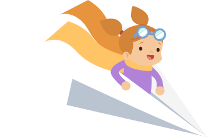

Человеческое тело создано для движения. Движение необходимо для здоровья и правильного функционирования. Без движения функции тела атрофируются, мышцы ослабевают и коже грозит разрушение. При наличии у человека, например, церебрального паралича, его способность целенаправленно двигаться
может быть ограничена, это препятствует укреплению и росту мышц. Для таких людей нужно создать условия, максимально способствующие обеспечению целенаправленного движения. Поскольку люди с ограниченными возможностями чаще всего ведут малоподвижный образ жизни, мы, как специалисты или родители, должны найти такое сиденье, которое позволяло бы им двигаться сидя.
До недавнего времени сложное сидячее оборудование для людей с ограниченными возможностями оставалось неподвижным и статическим. Кресла-коляски и поддерживающие системы часто способствуют тому, что тело находится в отклоненном и расслабленном положении. Регулировать такие кресла сложно и для этого могут потребоваться сторонние инструменты. Кресло настраивается под одного пользователя специалистом во время его приобретения и остается в неизменном положении на протяжении всего срока использования, что может невольно повлечь за собой ограничение преднамеренных движений.

| До недавнего времени сложное сидячее оборудование для людей с ограниченными возможностями оставалось неподвижным и статическим. Кресла-коляски и поддерживающие системы часто способствуют тому, что тело находится в отклоненном и расслабленном положении. Регулировать такие кресла сложно и для этого могут потребоваться сторонние инструменты. Кресло настраивается под одного пользователя специалистом во время его приобретения и остается в неизменном положении на протяжении всего срока использования, что может невольно повлечь за собой ограничение преднамеренных движений. |
|
|
Динамичной сидячей позы можно также достичь посредством использования поддержек и специальных возможностей многофункционального кресла, чтобы стимулировать человека к активному сидению. Ключевым моментом в подходе 2 является оптимальное позиционирование с минимально возможным числом поддержек, чтобы стул не ограничивал движений пользователя и позволял ему испытывать границы своих возможностей. Это в итоге, приведет к укреплению мышц, улучшению баланса и умению сохранять осанку. Большинство систем для сидения и позиционных систем предусматривают боковую и грудную поддержки, абдукторы и крепления для голени. Все это можно использовать и здесь для достижения «оптимального» активного сидения. |
До недавнего времени сложное сидячее оборудование для людей с ограниченными возможностями оставалось неподвижным и статическим. Кресла-коляски и поддерживающие системы часто способствуют тому, что тело находится в отклоненном и расслабленном положении. Регулировать такие кресла сложно и для этого могут потребоваться сторонние инструменты. Кресло настраивается под одного пользователя специалистом во время его приобретения и остается в неизменном положении на протяжении всего срока использования, что может невольно повлечь за собой ограничение преднамеренных движений.